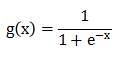
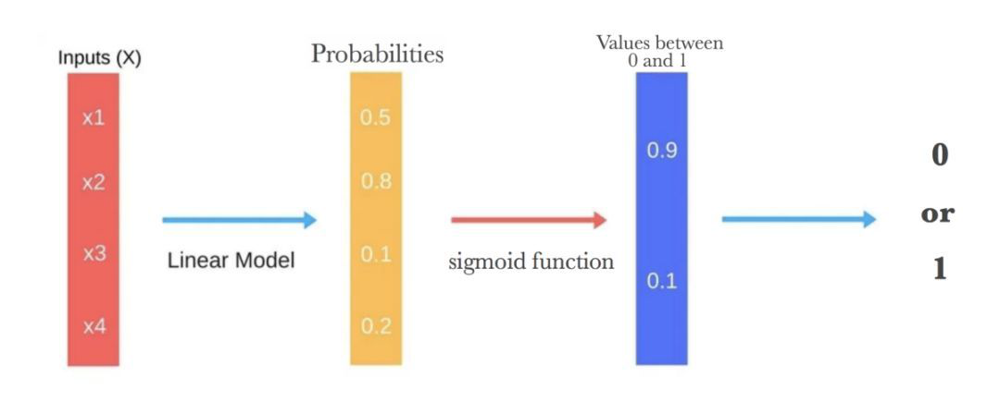
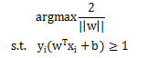
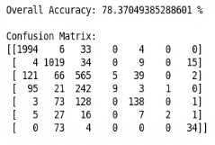

基于机器学习的心电图诊断识别
一 、机器学习基本原理
1.什么是机器学习
机器学习是人工智能的核心研究领域之一，其研究动机是为了让计算机系统具有人的学习能力以便实现人工智能。
目前被广泛采用的机器学习定义是“利用经验来改善计算机系统自身的性能”。
由于“经验”在计算机系统中主要是以数据的形式存在的，因此机器学习需要运用机器学习技术对数据进行分析，这就是的它逐渐成为智能数据分析技术的创新源之一，并且为此而受到越来越多的关注。
机器学习是人工智能的一个实现途径。
深度学习是机器学习的一个方法发展而来。
2.机器学习与数据挖掘的区别与联系
所谓数据挖掘就是：“识别出巨量数据中有效的、新颖的、潜在有用的、最终可理解的模式的非平凡过程”。顾名思义，数据挖掘就是试图从海量数据中找出有用的知识。
我们从这两个学科的著名教材目录可见，数据挖掘可以视为机器学习和数据库的交叉，主要利用机器学习界提供的技术来分析海量数据，利用数据库界提供的技术来管理海量数据。整体来说，机器学习偏理论，数据挖掘偏应用。
机器学习最基本的做法，是使用算法来解析数据、从中学习，然后对真实世界中的事件做出决策和预测。与传统的为解决特定任务、硬编码的软件程序不同，机器学习是用大量的数据来“训练”，通过各种算法从数据中学习如何完成任务。
举个简单的例子，当我们浏览网上商城时，经常会出现商品推荐的信息。这是商城根据你往期的购物记录和冗长的收藏清单，识别出这其中哪些是你真正感兴趣，并且愿意购买的产品。这样的决策模型，可以帮助商城为客户提供建议并鼓励产品消费。
机器学习直接来源于早期的人工智能领域，传统的算法包括决策树、聚类、贝叶斯分类、支持向量机、Adaboost等等。
机器学习算法大致可以分为三类：
监督学习算法 (Supervised Algorithms）:在监督学习训练过程中，可以由训练数据集学到或建立一个模式（函数 / learning model），并依此模式推测新的实例。该算法要求特定的输入/输出，首先需要决定使用哪种数据作为范例。例如，文字识别应用中一个手写的字符，或一行手写文字。主要算法包括神经网络、支持向量机、最近邻居法、朴素贝叶斯法、决策树等。
无监督学习算法 (Unsupervised Algorithms):这类算法没有特定的目标输出，算法将数据集分为不同的组。
强化学习算法 (Reinforcement Algorithms):强化学习普适性强，主要基于决策进行训练，算法根据输出结果（决策）的成功或错误来训练自己，通过大量经验训练优化后的算法将能够给出较好的预测。类似有机体在环境给予的奖励或惩罚的刺激下，逐步形成对刺激的预期，产生能获得最大利益的习惯性行为。在运筹学和控制论的语境下，强化学习被称作“近似动态规划”（approximate dynamic programming，ADP）。
3.分类的定义
分类就是构建一个分类模型，即分类器，然后通过分类器将数据对象映射到某个给定的类别中的过程。分类过程可分为两步：首先，使用已知类标记的训练数据集学习分类模型，这一步称为分类器的训练阶段。第二步应用分类模型对未知类标记的对象进行分类，这一步称为分类器的工作阶段。
本项目中的心电图分类任务属于多示例单标记学习。
二 、模型评估与选择
1.误差
如果在m个样本中有a个样本分类错误，则错误率 E=a/m，即为分类错误的样本数占总数的比例。
相应的，A=1-a/m 定义为精度。
更一般地，我们把学习器的实际预测输出与样本的真实输出之间的差异称为“误差”。学习器在训练集上的误差称为“训练误差”或“经验误差”，在新样本上的误差称为“泛化误差”。
2.评估指标
准确率和错误率是最常用的两种评估指标：
准确率是指分对样本占测试样本总数的比例
错误率是指分错样本占测试样本总数的比例
混淆矩阵：
准确率 = 所有检测正确的例/所有例 = （TP+TN）/（TP+FN+FP+TN）
精度 = 检测为正例中的真正例/ 所有检测为正的例 = TP/(TP+FP)
召回率 = 被检测为正例的正例/ 所有正例 = TP/（TP+FN）
精准率和召回率这两个指标有时精准率低一些有时召回率低一些，有时可能都低。那么实际中用哪个指标比较好呢？这一般和应用场景有关，对于有些场景，我们更注重精准率，比如股票预测，假设预测的是一个二分类问题：股票会升还是降，显然为了利润我们关注的是升（即上升为类1），为什么这种情况下精准率指标更好呢？因为精准率是所有分类为1的预测中有多少是正确的，对本例也就是预测未来股票上升有多少是对的，这更复合我们的利润最大决策。而召回率是实际上升的股票中我们预测对了多少，基于风险投资理念，有很多股票会上升的时刻，我们就算落掉一些也是没有关系的，没有投资进去也就没有损失，更重要的是我们的决策中有多少能赚钱，所以在这种场景下，精准率更好。
而如果在医疗领域，则是召回率更加重要，也就是要能在实际得病的人中尽量预测的更加准确，我们不想漏掉任何真正患病的人，这样才更有可能挽回一些人的生命，而精准率低些（没病的被预测为有病）并不会导致特别严重的后果，只是进行了一些过度医疗。
3.欠拟合
欠拟合就是模型没有很好地捕捉到数据特征，不能够很好地拟合数据。
如果在中间的图的模型后面再加一个二次项，就可以很好地拟合图中的数据了，如上面的图所示。
解决方法：
1）添加其他特征项，有时候我们模型出现欠拟合的时候是因为特征项不够导致的，可以添加其他特征项来很好地解决。例如，“组合”、“泛化”、“相关性”三类特征是特征添加的重要手段，无论在什么场景，都可以照葫芦画瓢，总会得到意想不到的效果。除上面的特征之外，“上下文特征”、“平台特征”等等，都可以作为特征添加的首选项。
2）添加多项式特征，这个在机器学习算法里面用的很普遍，例如将线性模型通过添加二次项或者三次项使模型泛化能力更强。例如上面的图片的例子。
3）减少正则化参数，正则化的目的是用来防止过拟合的，但是现在模型出现了欠拟合，则需要减少正则化参数。
4.过拟合
过拟合就是模型把数据学习的太彻底，以至于把噪声数据的特征也学习到了，这样就会导致在后期测试的时候不能够很好地识别数据，即不能正确的分类，模型泛化能力太差。
我们学习到的模型曲线如上图所示，虽然在训练的时候模型可以很好地匹配数据，但是很显然过度扭曲了曲线，不是真实的size与prize曲线。
解决方法：
1）重新清洗数据，导致过拟合的一个原因也有可能是数据不纯导致的，如果出现了过拟合就需要我们重新清洗数据。
2）增大数据的训练量，还有一个原因就是我们用于训练的数据量太小导致的，训练数据占总数据的比例过小。
3）采用正则化方法。正则化方法包括L0正则、L1正则和L2正则，而正则一般是在目标函数之后加上对于的范数。但是在机器学习中一般使用L2正则。
L0范数是指向量中非0的元素的个数。L1范数是指向量中各个元素绝对值之和，也叫“稀疏规则算子”（Lasso regularization）。两者都可以实现稀疏性，L1范数是L0范数的最优凸近似，而且它比L0范数要容易优化求解。所以大家才把目光和万千宠爱转于L1范数。
L2范数是指向量各元素的平方和然后求平方根。可以使得W的每个元素都很小，都接近于0，但与L1范数不同，它不会让它等于0，而是接近于0。L2正则项起到使得参数w变小加剧的效果，但是为什么可以防止过拟合呢？一个通俗的理解便是：更小的参数值w意味着模型的复杂度更低，对训练数据的拟合刚刚好（奥卡姆剃刀），不会过分拟合训练数据，从而使得不会过拟合，以提高模型的泛化能力。
4）采用dropout方法。这个方法在神经网络里面很常用。dropout方法是ImageNet中提出的一种方法，通俗一点讲就是dropout方法在训练的时候让神经元以一定的概率不工作。
如上图所示，左边a图是没用用dropout方法的标准神经网络，右边b图是在训练过程中使用了dropout方法的神经网络，即在训练时候以一定的概率p来跳过一定的神经元。
三 、利用python实现心电图诊断识别
基于ESBclassifier.py实现心电图诊断识别，文件目录/root/ecgpy/
注意：$ 符号是系统提示符，不用输入！
在桌面版的terminal中，输入如下代码：
#打开文件路径$cd /root/ecgpy#运行jupyter notebook$jupyter-notebook --allow-root
新建python文档
使用scikit-learn建模四步骤：
1、调用需要使用的模型类
2、模型初始化（创建一个模型实例）
3、模型训练
4、模型预测
1 、导入所需包
输入以下代码，并执行：
!pip install pandas!pip install scikit-learnimport numpy as npimport pandas as pdimport timefrom sklearn.tree import DecisionTreeClassifierfrom sklearn.ensemble import RandomForestClassifier, AdaBoostClassifierfrom sklearn.naive_bayes import GaussianNB, MultinomialNB, BernoulliNBfrom sklearn.linear_model import LogisticRegressionfrom sklearn import svmfrom sklearn.neighbors import KNeighborsClassifierfrom sklearn.neural_network import MLPClassifierfrom sklearn.ensemble import VotingClassifierfrom sklearn.metrics import confusion_matriximport random#exec time: STARTstart_time=time.time()
2 、数据预处理
取特征提取后的ccdd数据23535条，每条第1列为序号，第2列为标签，剩余169列为特征。其中标签共七类（数据文件：/root/ecgpy/NewCombined.txt）。
############# Data generation and Preprocessing ###############def load_data(fea_file):"""Extract ecg data from txt file, divide data into training set and test set, separate feature list and labels.:param fea_file: the path of the file to be loaded:return train_labels, train_data, test_labels, test_data: list objects"""train_labels = []train_data = []test_labels = []test_data = []file = open(fea_file, 'r')line = file.readline()while line:temp = line.split(";")temp_fea = temp[2].split(",")r = random.randint(0, 9)if r > 1:train_data.append(temp_fea)train_labels.append(temp[1])else:test_data.append(temp_fea)test_labels.append(temp[1])line = file.readline()file.close()train_data = np.array(train_data)train_data = train_data.astype(float)train_labels = np.array(train_labels)train_labels = train_labels.astype(np.int64)test_data = np.array(test_data)test_data = test_data.astype(float)test_labels = np.array(test_labels)test_labels = test_labels.astype(np.int64)return train_data, train_labels, test_data, test_labelsdata_file = '/root/ecgpy/NewCombined.txt'trainData_x, trainData_y, testData_x, testData_y = load_data(data_file)confusionMatrix = np.zeros((2, 2))print(len(trainData_x),len(testData_y))
3 、Logistic Regression
Logistic 回归是机器学习从统计学领域借鉴过来的另一种技术。它是二分类问题的首选方法。
像线性回归一样，Logistic 回归的目的也是找到每个输入变量的权重系数值。但不同的是，Logistic 回归的输出预测结果是通过一个叫作「logistic 函数」的非线性函数变换而来的。
Logistic Regression(LR) 是传统机器学习中的一种分类模型，由于算法的简单和高效，在实际应用非常广泛。它是直接对分类可能性进行建模，无需事先假设数据分布，这样就避免了假设分布不准确所带来的问题。它不仅可以预测出所属类别，同时可以得到近似概率预测，这对许多需利用概率辅助决策的任务很有用。
（1）sigmoid函数
在介绍逻辑回归模型之前，我们先引入sigmoid函数，其数学形式是:

logistic 函数的形状看起来像一个大的「S」，它会把任何值转换至 0-1 的区间内。这十分有用，因为我们可以把一个规则应用于 logistic 函数的输出，从而得到 0-1 区间内的捕捉值（例如，将阈值设置为 0.5，则如果函数值小于 0.5，则输出值为 1），并预测类别的值。
（2）工作原理

上图说明了logistic回归得出预测所需的所有步骤。
（3）多分类任务
前面讲到的都是二分类学习任务，现实应用中常常会遇到多分类学习任务。我们可以将二分类学习方法推广到多类，利用二分类学习器解决多分类问题。如对问题进行拆分，为拆出的每个二分类任务训练一个分类器，对每个分类器的预测结果进行集成以获得最终的多分类结果。
①一对一（OVO）
假设我们有N个类别，该策略基本思想就是不同类别两两之间训练一个分类器，这时我们一共会训练出 种不同的分类器。在预测时，我们将样本提交给所有的分类器，一共会获得N(N−1)/2 个结果，最终结果通过投票产生。
②一对多（OVR）
该策略基本思想就是将第i种类型的所有样本作为正例，将剩下的所有样本作为负例，进行训练得到一个分类器。这样我们就一共可以得到N个分类器。在预测时，我们将样本提交给所有的分类器，一共会获得N个结果，我们选择其中概率值最大的那个作为最终分类结果。
（4）实例
#Logistic Regression Classifierprint("****Logistic Regression**** \n")#创建一个模型实例LR=LogisticRegression()LR.fit(trainData_x,trainData_y)predict=LR.predict(testData_x)score=LR.score(testData_x,testData_y)S='Overall Accuracy: ' +repr(score*100)+' %'+'\n'print(S)confusionMatrix=confusion_matrix(testData_y,predict)print('Confusion Matrix: ')print(confusionMatrix)print('\n')
运行结果如图：
参数
penalty（正则化）：
参数可选择“L1”“L2”，默认参数为“L2”。 用于指定惩罚中使用的规范。【 ‘newton-cg’，’sag’和’lbfgs’解算器只支持l2惩罚】
dual（样本大于特征时用）：
bool，默认值：False 双重或原始配方。 双配方仅用于利用liblinear解算器的l2惩罚。 当n_samples> n_features时，首选dual = False。
tol：
float，默认值：1e-4 容忍停止标准。
C：
float，默认值：1.0 正规化强度逆; 必须是正数的浮动。 与支持向量机一样，较小的值指定更强的正则化。
fit_intercept：
bool，默认值：True 指定是否应将常量（a.k.a. bias或intercept）添加到决策函数中。
intercept_scaling：
float，默认值为1。仅在使用求解器“liblinear”且self.fit_intercept设置为True时有用。 在这种情况下，x变为[xself.intercept_scaling]。注意！ 合成特征权重与所有其他特征一样经受l1 / l2正则化。 为了减小正则化对合成特征权重（并因此对截距）的影响，必须增加intercept_scaling。
class_weight（权重设置）：
dict或’balanced’，默认值：无与{class_label：weight}形式的类相关联的权重。 如果没有给出，所有课程都应该有一个重量。“平衡”模式使用y的值自动调整与输入数据中的类频率成反比的权重，如n_samples /（n_classes * np.bincount（y））。请注意，如果指定了sample_weight，这些权重将与sample_weight（通过fit方法传递）相乘。
random_state（随机种子）：
int或None，可选，默认值：None ; 在随机数据混洗时使用的伪随机数生成器的种子。 如果是int，则random_state是随机数生成器使用的种子; 如果是RandomState实例，则random_state是随机数生成器; 如果为None，则随机数生成器是np.random使用的RandomState实例。 在求解器==’sag’或’liblinear’时使用。
solver（处理器） ：
{‘newton-cg’, ‘lbfgs’, ‘liblinear’, ‘sag’, ‘saga’},
default：‘liblinear’ 在优化问题中使用的算法。对于小数据集，‘liblinear’是一个不错的选择，但是’sag’和’saga’对于 大数据集 来说更快。对于 多类问题 ，只有’newton-cg’，‘sag’，’saga’和’lbfgs’处理多项损失;
‘liblinear’仅限于 一对一休息方案。‘newton-cg’，’lbfgs’和’sag’只处理L2惩,而’liblinear’和’saga’处理L1惩罚。请注意，“sag”和“saga”快速收敛仅在具有大致相同比例的要素上得到保证。 您可以使用sklearn.preprocessing中的缩放器预处理数据。
max_iter：
int，默认值：100 ；
仅适用于newton-cg，sag和lbfgs求解器。 求解器收敛的最大迭代次数。
multi_class：
str，{‘ovr’，‘multinomial’}，默认值：‘ovr’；
多类选项可以是’ovr’或’multinomial’。 ‘ovr’是表示one-vs-rest，’multinomial’是表示many-vs-many。
verbose：
int，默认值：0
对于liblinear和lbfgs求解器，将verbose设置为正数以表示详细程度。
warm_start：
bool，默认值：False
设置为True时，重用上一次调用的解决方案来初始化，否则，擦除以前的解决方案。 对于liblinear解算器没用。
n_jobs（处理器个数的选择）：
int，默认值：1
如果multi_class =‘ovr’“，则在对类进行并行化时使用的CPU核心数。 无论是否指定’multi_class’，当solver设置为’liblinear’时，都会忽略此参数。 如果给定值-1，则使用所有核心
4 、决策树
（1）树的构建
决策树是一个类似于流程图的树结构，其中每一个树节点表示一个属性上的测试，每一个分支代表一个属性的输出，每一个树叶节点代表一个类或者类的分布，树的最顶层是树的根节点。
决策树学习算法包含特征选择、决策树的生成与剪枝过程。决策树的学习算法通常是递归地选择最优特征，并用最优特征对数据集进行分割。开始时，构建根结点，选择最优特征，该特征有几种值就分割为几个子集，每个子集分别递归调用此方法，返回结点，返回的结点就是上一层的子结点。直到所有特征都已经用完，或者数据集只有一维特征为止。
决策树学习对噪声数据具有很好的鲁棒性，而且学习得到的决策树还能被表示为多条if-then形式的决策规则，因此具有很强的可读性和可解释性。
（2）剪枝处理
剪枝是决策树学习算法对付“过拟合“的主要手段，在决策树学习中，为了尽可能正确分类训练样本，结点划分过程将不断重复，有时会造成决策树分支过多，以至于把训练集自身的一些特点当作所有数据都具有的一般性质而导致过拟合。因此可通过主动去掉一些分支来降低过拟合的风险。
①预剪枝
预剪枝是指在决策树生成过程中，对每个节点在划分前先进行估计，若当前节点的划分不能带来决策树泛化性能提升，则停止划分并将当前节点标记为叶节点。
②后剪枝
后剪枝则是先从训练集生成一棵完整的决策树，然后自底向上地对非叶节点进行考察，若将该节点对应的子树替换为叶节点能带来决策树泛化能力提升，则将该子树替换为叶节点。
ID3和C4.5算法，生成的决策树是多叉树，只能处理分类不能处理回归。而CART（classification and regression tree）分类回归树算法，既可用于分类也可用于回归。 分类树的输出是样本的类别， 回归树的输出是一个实数。
CART算法步骤：
1、特征选择；
2、递归建立决策树；
3、决策树剪枝；
（3）实例
print("****Decision Tree**** \n")#创建一个实例DT = DecisionTreeClassifier()DT.fit(trainData_x,trainData_y)predict=DT.predict(testData_x)score=DT.score(testData_x,testData_y)S='Overall Accuracy: ' +repr(score*100)+' %'+'\n'print(S)confusionMatrix=confusion_matrix(testData_y,predict)print('Confusion Matrix: ')print(confusionMatrix)print('\n')
运行结果如图：
参数
criterion
是用来设置不纯度的判决方法，默认的criterion参数使用的是‘gini’基尼系数，还可以设置为‘entropy’信息增益。具体根据模型效果，看哪个更适合你的模型。
splitter
是设置划分点选择标准，默认是’best’，这也是比较常用的。
max_depth
是设置决策树的最大层数。如果树形比较简单就按照默认就行了，如果树形太过于复杂，可以设置一下最大层数。可以防止过拟合。
min_samples_split
是设置决策树分叉最少要有多少个样本才能形成一个新的分支，如果数量少于设置的值就不再分叉了。
min_samples_leaf
是设置每个决策树的叶子上面的样本数量，少于设置值就会被剪掉。
min_weight_fraction_leaf
这个和min_samples_leaf差不多，不过是用的权重占比决定是否要该叶子。
max_features
是限制用于分类的特征值的最大数量。默认使用全部特征值。
max_leaf_nodes
设置最大节点数。
min_impurity_split
是设置最低不纯度，低于这个值就不再分叉了。
看完这么多参数设置，可以发现多个参数都是与控制分叉的深度，防止过度拟合有关：
max_depth， min_samples_split，min_samples_leaf， min_weight_fraction_leaf， max_leaf_nodes， min_impurity_split。
5 、支持向量机
支持向量机（support vector machine，SVM）不仅具有坚实的统计学理论基础，还可以很好地应用于高维数据、避免维度灾难问题。是一种备受关注的机器学习分类技术。
（1）最大边缘超平面
给定训练数据集，线性分类器最基本的思想是：在样本空间中寻找一个超平面，将不同类别的样本分开。
在同一个分类问题中，可以将训练样本分开的超平面可能有很多，分类器如何选择一个最好的超平面来表示它的决策边界呢？
如图所示，每个超平面B_1都对应着一对平行的超平面：b_11和b_12，它们之间的间隔称为超平面的边缘（margin）。
一般地，决策边界的边缘较小，其任何轻微的扰动都可能对分类结果产生较大的影响。所以具有较大边缘的决策边界具有更好的泛化误差。因此，根据结构风险最小化原理，我们需要设计最大化决策边界的边缘的线性分类器，以确保最坏情况下的泛化误差最小。线性支持向量机就是这样的分类器。
（2）线性支持向量机
在样本空间中，划分超平面可通过如下线性方程来描述：
其中w为法向量，决定了超平面的方向，b为位移项，决定了超平面与原点之间的距离。所以，决策边界由参数w和b确定，我们将其记为（w，b）。样本空间中任意点x到超平面（w，b）的距离可写为：
因此，线性支持向量机的学习就是要寻找满足约束条件的参数w和b，使得γ最大，即：

由于目标函数是二次的，并且约束条件在参数w和b上是线性的，因此线性支持向量机的学习问题是一个凸二次优化问题，可以直接用现成的优化计算包求解，或者用更高效的拉格朗日乘子法求解。
（3）非线性支持向量机
线性SVM假定训练样本是线性可分的，即存在一个线性的决策边界能将所有的训练样本正确分类。然而在实际应用中，在原始的样本空间内也许并不存在这样的决策边界。对于这样的问题，可将样本从原始空间映射到一个更高维的特征空间，使得样本在映射后的特征空间内线性可分。幸运的是，如果原始空间是有限维，那么一定存在一个高维特征空间使样本可分。
求解上面的优化问题，涉及到计算样本与映射到特征空间之后的内积，这往往是非常困难的，为了避开这个障碍，一个基本的想法是设计一个核函数。与映射到高维特征空间之后的内积等于它们在原始样本空间中通过核函数计算的结果。
根据Mercer定理，只要一个对称函数所对应的核矩阵半正定，那么它就能作为核函数来使用。常用的核函数有：
于是，核函数的选择成为非线性SVM的最大变数，若核函数选择不合适，就意味着将样本空间映射到了一个不合适的特征空间，从而很可能导致非线性SVM性能不佳。
（4）实例
#Support Vector Machine Classifierprint("****SVM**** \n")SVM1=svm.SVC()SVM1.fit(trainData_x,trainData_y)predict=SVM1.predict(testData_x)score=SVM1.score(testData_x,testData_y)S='Overall Accuracy: ' +repr(score*100)+' %'+'\n'print(S)confusionMatrix=confusion_matrix(testData_y,predict)print('Confusion Matrix: ')print(confusionMatrix)print('\n')
运行结果如图：

参数
C：
C-SVC的惩罚参数，默认值是1.0
C越大，相当于惩罚松弛变量，希望松弛变量接近0，即对误分类的惩罚增大，趋向于对训练集全分对的情况，这样对训练集测试时准确率很高，但泛化能力弱。C值小，对误分类的惩罚减小，允许容错，将他们当成噪声点，泛化能力较强。
kernel ：
核函数，默认是rbf，可以是‘linear’, ‘poly’, ‘rbf’, ‘sigmoid’, ‘precomputed’
0 – 线性：u’v
1 – 多项式：(gammau’v + coef0)^degree
2 – RBF函数：exp(-gamma|u-v|^2)
3 –sigmoid：tanh(gammau’v + coef0)
degree ：
多项式poly函数的维度，默认是3，选择其他核函数时会被忽略。
gamma ：
‘rbf’,‘poly’ 和‘sigmoid’的核函数参数。默认是’auto’，则会选择1/n_features
coef0 ：
核函数的常数项。对于‘poly’和 ‘sigmoid’有用。
probability ：
是否采用概率估计？默认为False
shrinking ：
是否采用shrinking heuristic方法，默认为true
tol ：
停止训练的误差值大小，默认为1e-3
cache_size ：
核函数cache缓存大小，默认为200
class_weight ：
类别的权重，字典形式传递。设置第几类的参数C为weight*C(C-SVC中的C)
verbose ：
允许冗余输出
max_iter ：
最大迭代次数。-1为无限制。
decision_function_shape ：
‘ovo’, ‘ovr’ or None, default=None3
random_state ：
数据洗牌时的种子值，int值
主要调节的参数有：C、kernel、degree、gamma、coef0。
6 、贝叶斯分类器
（1）贝叶斯学习
用P(h)表示在没有观察到训练数据之前假设h拥有的初始概率，P(h)被称为假设h的先验概率。先验概率反映了关于假设h是一正确假设的机会的背景知识；如果没有这一先验知识，可以简单地将每一候选假设赋予相同的先验概率。类似地，P(D)表示训练数据D的先验概率，那么P(D|h)就表示假设h成立时D的概率。在分类问题中，我们关心的是P(h|D)，即给定D时h的成立的概率，称为h的后验概率。
贝叶斯定理：
因为如果D独立于h时被观察到的可能性越大，那么D对h的支持度就越小，故P(h|D)随着P(h)和P(D|h)的增长而增长，而随着P(D)的增长而减少。
贝叶斯网络是一个带有概率注释的有向无环图，图中的每一个节点均表示一个随机变量，图中两节点间若存在着一条弧，则表示这两节点相对应的随机变量是概率相依的，反之则说明这两个随机变量是条件独立的。
（2）朴素贝叶斯法
朴素贝叶斯法的基本假设是条件独立性：
这是一个较强的假设。由于这一假设，模型包含的条件概率的数量大为减少，朴素贝叶斯法的学习与预测大为简化，因而朴素贝叶斯法高效且易于实现。其缺点是分类的性能不一定很高。
朴素贝叶斯法利用贝叶斯定理与学到的联合概率模型进行分类预测
将输入x分到后验概率最大的类y
后验概率最大等价于0-1损失函数时的期望风险最小化。
（3）实例
print("****Naive Bayes**** \n")NB=BernoulliNB ()NB.fit(trainData_x,trainData_y)predict=NB.predict(testData_x)score=NB.score(testData_x,testData_y)S='Overall Accuracy: ' +repr(score*100)+' %'+'\n'print(S)confusionMatrix=confusion_matrix(testData_y,predict)print('Confusion Matrix: ')print(confusionMatrix)print('\n')
运行结果如图：
朴素贝叶斯是一类比较简单的算法，scikit-learn中朴素贝叶斯类库的使用也比较简单。相对于决策树，KNN之类的算法，朴素贝叶斯需要关注的参数是比较少的，这样也比较容易掌握。在scikit-learn中，一共有3个朴素贝叶斯的分类算法类。分别是GaussianNB，MultinomialNB和BernoulliNB。其中GaussianNB就是先验为高斯分布的朴素贝叶斯，MultinomialNB就是先验为多项式分布的朴素贝叶斯，而BernoulliNB就是先验为伯努利分布的朴素贝叶斯。这三个类适用的分类场景各不相同，一般来说，如果样本特征的分布大部分是连续值，使用GaussianNB会比较好。如果样本特征的分布大部分是多元离散值，使用MultinomialNB比较合适。而如果样本特征是二元离散值或者很稀疏的多元离散值，应该使用BernoulliNB。
7 、神经网络
（1）神经元模型
神经网络中最基本的成分是神经元模型，在生物神经系统重，每个神经元通过轴突与其他相邻的神经元相连，当神经元收到刺激而“兴奋”时，就会向相连的神经云传递神经脉冲，从而改变这些神经元内的电位；如果神经元的电位超过一个“阈值”，那么它就会被激活，即“兴奋”起来，再向其他相连的神经元传递神经脉冲。
输入：来自其他m个神经云传递过来的输入信号
处理：输入信号通过带权重的连接进行传递，神经元接受到总输入值将与神经元的阈值进行比较。
输出：通过激活函数的处理以得到输出。
（2）激活函数
①线性函数（Linear Function）
线性函数只能进行线性变化，不适合用来处理非线性问题。
②非线性斜面函数（Ramp Function）
③阈值函数（Threshold Function）
④逻辑斯蒂函数（Logistic Function）
将较大范围变化的输入值挤压到（0，1）的输出范围内，因此也叫挤压函数；有较好的增益控制能力，也叫增益控制函数。
（2）实例
#Neural Network Classifierprint("****Neural Network**** \n")NN=MLPClassifier(activation='logistic',solver='lbfgs',hidden_layer_sizes=(10,2),momentum = 0.9, learning_rate='constant', learning_rate_init=0.001, early_stopping=True, random_state=200)NN.fit(trainData_x,trainData_y)predict=NN.predict(testData_x)score=NN.score(testData_x,testData_y)S='Overall Accuracy: ' +repr(score*100)+' %'+'\n'print(S)confusionMatrix=confusion_matrix(testData_y,predict)print('Confusion Matrix: ')print(confusionMatrix)print('\n')
运行结果如图：
参数
hidden_layer_sizes：
元组，同时指定隐藏层 层数+每层单元数。比如（10,20）两层，第一层10个隐藏单元，第二层20个单元；
activation：
隐藏层的激活函数，可选为{‘identity’, ‘logistic’, ‘tanh’, ‘relu’}，分别对应：{ f(x) = x ，f(x) = 1 / (1 + exp(-x))，f(x) = tanh(x)，f(x) = max(0, x)}
solver：
参数的优化算法，可选为{‘lbfgs’, ‘sgd’, ‘adam’}，分别对应{拟牛顿法，随机梯度下降，基于随机梯度下降的自适应}的具体实现算法
alpha：
L2正则化参数
batch_size：
对于随机优化器来说是可选的，批大小，设为auto时为min(200，n_SAMPLES)
learning_rate：
参数更新时的学习率，只在solver=’sgd’时有效，可选为{‘constant’, ‘invscaling’, ‘adaptive’}，分别对应{常数即=初始学习率，逐渐降低，自适应}
learning_rate_init：
初始学习率，只在solver=’sgd’ 或’adam’起作用
power_t：
影响learning_rate=” invscaling “时的学习率降低（有个计算公式effective_learning_rate = learning_rate_init / pow(t, power_t)，t表示时间步）
max_iter：
最大迭代轮数
tol：
损失值容忍阈值，小于该值时停止训练
8 、k近邻学习
最简单最初级的分类器是将全部的训练数据所对应的类别都记录下来，当测试对象的属性和某个训练对象的属性完全匹配时，便可以对其进行分类。但是怎么可能所有测试对象都会找到与之完全匹配的训练对象呢，其次就是存在一个测试对象同时与多个训练对象匹配，导致一个训练对象被分到了多个类的问题，基于这些问题呢，就产生了KNN。
（1）工作原理
KNN是通过测量不同特征值之间的距离进行分类。它的思路是：如果一个样本在特征空间中的k个最相似(即特征空间中最邻近)的样本中的大多数属于某一个类别，则该样本也属于这个类别，其中K通常是不大于20的整数。KNN算法中，所选择的邻居都是已经正确分类的对象。该方法在定类决策上只依据最邻近的一个或者几个样本的类别来决定待分样本所属的类别。
下面通过一个简单的例子说明一下：如下图，绿色圆要被决定赋予哪个类，是红色三角形还是蓝色四方形？如果K=3，由于红色三角形所占比例为2/3，绿色圆将被赋予红色三角形那个类，如果K=5，由于蓝色四方形比例为3/5，因此绿色圆被赋予蓝色四方形类。
由此也说明了KNN算法的结果很大程度取决于K的选择。
在训练集中数据和标签已知的情况下，输入测试数据，将测试数据的特征与训练集中对应的特征进行相互比较，找到训练集中与之最为相似的前K个数据，则该测试数据对应的类别就是K个数据中出现次数最多的那个分类，其算法的描述为：
1）计算测试数据与各个训练数据之间的距离；
2）按照距离的递增关系进行排序；
3）选取距离最小的K个点；
4）确定前K个点所在类别的出现频率；
5）返回前K个点中出现频率最高的类别作为测试数据的预测分类。
（2）距离度量
接近程度的度量常用的是欧式距离，也有Manhatan距离，Minkowski距离等。不同的距离度量得到的结果很可能不一样，而选择合适的距离对计算效率也很重要。
（3）实例
#K-Nearest Neighbors Classifierprint("****K-nearest neighbors**** \n")KNN=KNeighborsClassifier(n_neighbors=2,weights="uniform")KNN.fit(trainData_x,trainData_y)predict=KNN.predict(testData_x)score=KNN.score(testData_x,testData_y)S='Overall Accuracy: ' +repr(score*100)+' %'+'\n'print(S)confusionMatrix=confusion_matrix(testData_y,predict)print('Confusion Matrix: ')print(confusionMatrix)print('\n')
运行结果如图：
四 、小结
该实验涉及机器学习相关知识，采用LRLogistic Regression、决策树、SVM、KNN等分类模型实现心电数据识别。”
 暂无视频
暂无视频
给实验评分
: